|
Mary Virginia Wade was born
in Gettysburg, Adams County, Pennsylvania, to a father of
English descent and a mother whose ancestors were German.
Her father, James Wade, Sr., was born in James City,
Virginia to Thomas Wade and Elizabeth Mills on August 9,
1814. Her mother, Mary Ann Filby Wade, was born in 1820, in
York, Pennsylvania, the first child of Samuel Filby and
Elizabeth Maria de Groff. James and Mary were married on
April 15, 1840 and started a family fifteen months later
when their daughter, Georgeana or "Georgia' was born on July
4. Two years later, Mary Virginia arrived into the world on
a beautiful May 21 in 1843. The couple's firstborn son,
John James joined the family on March 13, 1846, followed by
Martha Margaret on May 9, 1849, who died as an infant just
four months later on September 16. After two years, Samuel
Swan was born on August 6, 1851, who, as a three-year-old,
was delighted to get a baby brother, Harry Marion on
February 4, 1855. All of the Wade children were christened
in the local Trinity Reformed Church. Mary Virginia was
baptized there on January 1, 1845 by Reverend Samuel
Gutelius and nineteen years later she was confirmed and
united with the St. James Lutheran Church which stood on
York Street in the village of her birth.
Her birthplace, built some time between 1814 and 1820,
was a small clapboard house at the crest of a low hill on
Baltimore Street in Gettysburg. While renting that house
from John Pfoutz, the Wade family lived in the northern half
as James Wade used the southern side for his tailoring shop.
As a child, Mary Virginia attended the local schools
while she continued to earn money to help support her family
by doing housework and sewing within her father's tailoring
trade. When she grew to be a young girl, her schoolmates
often called her 'Gin' or 'Ginnie' by reason of her middle
name. The title 'Jennie' was a subsequent newspaper
inaccuracy which has persisted even within her own family.
Mary Virginia's younger friends may have nicknamed her
"Ginnie" but as the years went by she was referred to as
"Jennie" by even her mother, her brothers and sister and by
her closest male friend.
When James Wade, Sr.'s health failed in the early 1850s,
Mary Wade and her daughters began to work as seamstresses so
that they could retain ownership of the neat, rectangular
house they had built which was one of the first houses
constructed on Breckenridge Street. This was the dwelling
they called home when two vast armies invaded their peaceful
town of 2,400 inhabitants in 1863.
The social status of the Wade family was often times a
sensitive subject in the hamlet, due mostly to troubles
caused by Jennie's father. According to the September 2,
1850 issue of the Adams Sentinel James Wade, Sr. was
arrested for taking $300 of Samuel Durboraw's money which
had "dropped from his pocket whilst engaged in some
business" in Gettysburg. The article continued, stating,
'Suspicion was excited against James Wade (tailor) ... who
had gone into Maryland and was making a 'flourish' there. He
was followed by Mr. Durboraw, and Constable Weaver, and
arrested in Washington City, and about $240, identified as a
portion of the lost money, found in his possession." It
should be noted that it was quite improper in times such as
this to play "finders-keepers' - it was imperative for the
finder to place an advertisement in the newspaper and ask
for proof of ownership. A week later, the same paper
recorded that Wade was extradited from Washington, D.C. and
indicted for, "larceny in the case of the missing money of
Samuel Durboraw at Gettysburg" by Justice Joel B. Danner. On
November 25, the publication claimed that Wade had been
convicted of larceny and sentenced to two years of solitary
confinement at Eastern Penitentiary in Philadelphia.
James Wade's conduct must not have improved in the
ensuing years, for in January of 1852, Mary Wade petitioned
the Adams County Court of Common Pleas to have her husband
declared "very insane" and he was committed to the Adams
County Alms House or "Poor House" which stood just north of
Gettysburg. This turn of events left Mrs. Wade and her
young daughters with the responsibility of supporting their
seemingly endless financial woes.
|
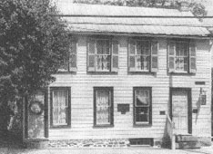
|
|
The house where Jennie Wade was born.
|
Ten years later in 1862, Georgia
wed John Louis McClellan of Gettysburg on April 15, which
was also her parents' wedding anniversary. Born on April 7,
1838 to unmarried Colonel John Joseph Henry McClellan and
Mary Blakely, Louis McClellan spent his youthful days
playing in the hallways, rooms, and kitchen where he lived
at the McClellan Hotel, which had been in his family since
1808. He was educated in the public school and then
attended Pennsylvania College in Gettysburg until the
outbreak of the Civil War, when he responded to President
Abraham Lincoln's first call for volunteers. John Louis
enlisted in the 2nd Pennsylvania Infantry Regiment and
between periods of service he wed Georgia, standing proud
and tall in his new military uniform. Although Louis soon
headed back to camp, newly married Georgia moved into a
rented northern half of a double house on south Baltimore
Street near Cemetery Hill. This marriage burdened
nineteen-year-old Jennie with helping her mother maintain
the household as she became her main support in sustaining a
home for themselves and for her brother.
In the winter of 1861-62 with the Civil War now seven
months old, the 10th New York Cavalry Regiment, known as
'The Porter Guards,- was ordered to Gettysburg where it was
stationed for three months. The New Yorkers spent those
long wintry days drilling and perfecting the use of sabers
and small arms for they had been sent to protect the state's
borders against any possible Southern intrusion. From time
to time Mary Wade and her daughters repaired uniforms and
performed other similar services for these soldiers. The
Wade women were highly respected by the New York men who
described them as kindly and hospitable. Occasionally,
Jennie invited the visiting troopers to attend services at
St. James Lutheran Church.
Even with so much to occupy her time, these were lonely
days for Jennie, who was longing to see a particular young
man, Johnston Hastings "Jack" Skelly, Jr., who was miles
away fighting in the Union Army with the 8th Corps in
Virginia.
|
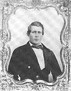
|
|
Johnston "Jack" Skelly
|
In the years prior to the Civil War, Jennie and Jack played
together with other school children in the streets, fields
and woods around Gettysburg. It seems that the carefree
friendship they had developed grew into one of long serious
talks in which they exchanged their innermost dreams for the
future. Their friendship, it was said, blossomed into what
could have been called love. But war has a way of
separating those in love and Jack Skelly bade Jennie
farewell and shouldered a musket to defend the Union which
left her to the task of praying for his safe return. She
treasured every letter he wrote, but in her favorite
correspondence he renewed his vows of loyalty to the Union
and to her, a message she so cherished that she carried it
in her dress next to her heart.
Some of Skelly's boyhood friends moved away, seeking
adventure or employment, only to be reunited when all the
available men were gathering for military service. About
seven years before the Battle of Gettysburg, in 1856, C.
William Hoffman, owner of a Gettysburg carriage shop moved
his business to Shepherdstown, Virginia, now West Virginia.
A number of his Gettysburg workmen went with him, among
them, John Wesley Culp, who sewed the upholstery, and
Charles Edwin Skelly, the older brother of Jack Skelly. Jack
had no reason to leave Gettysburg with the Hofftnan
employees as he was a stonemason and granite cutter by
trade, and unlike his father who was a tailor, he was almost
always employed.
While living in Virginia, Wesley Culp, as he was
generally known, joined the Southern army, an action that
his beloved hometown and even his own brother never
understood nor really forgave him. This following
explanation, which may have been accepted by those who knew
Wesley intimately, could provide a partial answer. In
Shepherdstown there was a social and military organization
that had existed prior to the Civil War called the Hamtramck
Guards, named for a resident, Colonel J.F. Hamtramck, a
veteran of the War with Mexico. Wesley Culp, who liked the
military, promptly joined the "Guards." Were his sympathies
Southern? No one in Gettysburg really ever knew. But it
was advantageous for him to join the local military company
because it whiled away the tedium of life for this young man
in a strange community and it gave him the opportunity to
meet many acquaintances and gain some good friends.
When the tragic War Between the States began in 1861, the
little coterie of Gettysburg workmen in Shepherdstown
prepared to return home. "Get ready, Wes," his companions
said to him, "we're going North." "No," replied Wesley Culp,
determinedly, 'I am going to stay here, come what may,' and
stay he did while Edwin Skelly and the others sorrowfully
bade him goodbye. The Hamtramck Guards were later enrolled
as Company B of the Second Virginia Infantry Regiment, which
would become part of the famed "Stonewall' Brigade, a unit
Wesley would serve in through all of its campaigns until
that fateful summer of 1863.
Meanwhile, in the Northern states the call to arms was
quickly answered by the men of quiet, rural Gettysburg. When
the Second Pennsylvania Volunteers was mustered in on April
29, 1861, in the ranks of Company E stood Corporal William
E. Culp, Wesley's brother, as well as Private Johnston H.
Skelly.
The Skellys firmly supported the United States, and Jack,
then twenty years old, was one of the first to enlist. "My
country needs me, mother," he said, "May I go?" "Yes, my
boy," she answered, "and may God bless and keep you." So
Jack Skelly went off to war with the Second Pennsylvania,
where speculation was always rife as to what had become of
their friend, John Wesley Culp.
The three months' service of these Pennsylvania troops in
the initial year of the Civil War was a bloodless one. In
July the Battle of Bull Run was fought, which gave an early
victory to the South and inspired President Lincoln and
unified the North more completely than a victory would have
done. "Give me 300,000 men for three years" called Father
Abraham, in his distress. "We'll give our quota," replied
loyal Gettysburg, and it did. Most of the boys of Company
E, Second Pennsylvania later reenlisted into Company F of
the Eighty-seventh Pennsylvania Volunteer Infantry,
including Jack Skelly, now a corporal. New recruits also
joined; Charles Edwin Skelly, William T. Ziegler and William
'Billy" Holtzworth. William Culp was promoted first
sergeant and later became an officer and quartermaster of
that regiment. All were old acquaintances of Wesley Culp.
Johnston H. Skelly, Sr., not to be outdone by his sons,
enlisted and served in Company K, 101st Pennsylvania
Volunteer Infantry, a company partially recruited in the
Gettysburg area.
General Robert E. Lee's second
invasion of the North began in early June, 1863, and one
portion of Ms Confederate Army of Northern Virginia marched
through Winchester, Virginia where they captured the town
and tons of U.S. supplies, fighting a minor engagement in
the process. After the capture, Wesley Culp, who was
present with his regiment, recognized some of his childhood
friends who had been taken prisoner in what was called the
battle of Carter's Woods. Ironically, both Wesley and
William Culp participated in that battle, on opposite sides.
William was with the defenders of Winchester while Wesley
was with the attacking rebels. Truly, brother had fought
against brother.
On Monday, June 15, many of General Robert H. Milroy's
Federal troops were surrounded in the fighting in Carter's
Woods. William Culp escaped, but others from Gettysburg
were captured, among them were Corporal Skelly and Sergeants
Ziegler and Holtzworth. During the action Skelly was called
upon to surrender. He and several other men attempted to
flee. Shots rang out and Skelly was struck in the upper arm
with a Minie' ball.
When the victorious force, Johnson's Division of Ewell's
Corps, passed by in pursuit, a familiar voice greeted
Sergeant Holtzworth who was one of the unfortunate prisoners
standing by the wayside. It was his friend, Wesley Culp,
who greeted him with a sympathetic "hello." When Wesley
offered to help him just as if they were not enemies,
Holtzworth immediately solicited medical aid for his
comrade, Jack Skelly. Wesley was saddened to learn that
such bad luck had overtaken his schoolmate and he instantly
took the actions necessary to have Skelly moved to a field
hospital in the town.
Some time later Wesley visited Jack in the Taylor House
Hospital in Winchester where Skelly gave him a message "in
case he got to Gettysburg," referring to the fact that the
Confederate army was possibly enroute to Pennsylvania as
part of its invasion plans. It has always been believed by
the families that the message was for Skelly's sweetheart,
Jennie Wade, but others thought Skelly breathed only a dying
sentiment to his beloved mother. When Wesley left Jack that
day, it was the last time they would ever meet.
Seventy miles northeastward, early summer was upon the
rolling fertile fields and woods, and word of the
approaching Rebel army would soon reach the tranquil
inhabitants of Gettysburg. In these troubled times, Jennie
Wade, notwithstanding her father's Southern heritage, never
faltered in her feelings of patriotism. She had been
surrounded most of her life by family members who willingly
served in the military of the United States of America. As
an example, her great-grandfather, Colonel Chidley Wade, was
killed during the American Revolution and was among the
casualties of nearly 1,000 men at the Battle of Brandywine
on September 11, 1777. Her grandfather, Thomas Wade, aide
de camp to General Marquis de Lafayette, was wounded at the
same battle. And just prior to the Mexican War, Jennie's
father was elected a captain in the 80th Pennsylvania
militia, being commissioned by Governor David R. Porter on
August 3, 1842. More recently, in 1861, her sister's
husband, J. Louis McClellan, had answered Lincoln's first
call for volunteers and after his ninety-day term expired he
reenlisted with the 165th Pennsylvania Volunteers, a
nine-month regiment and would serve until July, 1863.
During the ever changing events of that year, Jennie
heard most of the frightening rumors spread by the neighbors
and relatives around her. But, she, like most residents,
never considered fleeing the town.
Georgia's neighbor, Lydia Catherine Ziegler recalled
later that the spring and summer of '63 were days in which
the citizens of our quiet village were much disturbed."
Thirty-year-old Sarah M. Broadhead wrote in her diary that
real alarm was not felt until June 15 when a telegram came
from Governor Andrew W. Curtin advising Gettysburg citizens
to move their stores to more secure places as quickly as
possible. On June 20 messages arrived from General Darius
N. Couch, Commander of the Department of the Susquehanna,
that residents should see to their own protection, which was
sufficiently terrifying enough to incite a meeting at the
Court House for "placing the county in a state of military
organization as would be deemed most advisable."
The Gettysburg Compiler of June 22, 1863 reprinted a
Baltimore Sun article which reported 2,000 Southern troops
occupying Chambersburg but that "excitement was subsiding."
On the other hand, the Adams Sentinel, the town's second
newspaper, on the same day thought it possible "that a great
battle will be fought ... a collision is almost certain."
Throughout the latter part of that fateful month, Adams
Countians eagerly followed newspaper accounts and listened
to any and all rumors with increasing apprehension.
On June 26 the
Gettysburg community came face-to-face with their worst
fears.
According to Robert F. McClean, 18, of Gettysburg,
Confederate General Jubal A. Early's men triumphantly
entered the town on that day via Chambersburg Street, the
officers brandishing swords and the troops firing their guns
into the air. To ten-year-old Gates D. Fahnestock, who in
the safety of his home peered out through the slatted
shutters, the spectacle was to be enjoyed 'as they would a
wild west show." 21
But to Jennie Wade, the arrival of the Rebels spelled the
advent of many ominous events within her family which would
manifest themselves during the course of that unforgettable
day and long afterwards.
On that momentous Friday, her mother was staying at
Georgia's house on Baltimore Street, caring for her daughter
who had given birth to her first child, Louis Kenneth, with
the assistance of a doctor who had remained in the town. The
baby was born at about two thirty - just one hour before the
Southerners marched into Gettysburg. This placed Jennie
accountable for sustaining the family home on Breckenridge
Street, which was located a little over five hundred yards
northward toward the village.
One of Jennie's most important tasks was to care for
Isaac Brinkerhoff, a boarder the Wades had taken in to earn
extra money to make ends meet. Six-year-old Isaac was a
crippled boy whose mother worked away from home during the
week, and he could not care for himself because he was
unable to walk. Looking after Isaac and her little brother
Harry, age eight, was very time-consuming for Jennie,
especially while she also carried the responsibilities of
many other jobs.
Despite all of this, Jennie put these duties aside when
an older brother called upon her to help him prepare to
enter the Union Army. Jennie's brother, John, nicknamed
"Jack,' was yet another family member who was intensely
devoted to his country and its cause. Jack, who was
seventeen, had enlisted in Company B of the 21st
Pennsylvania Cavalry Regiment on June 23, 1863, and had been
assigned duty as bugler. He was very small for his age, a
mere five feet three inches, and when his uniform was issued
it was found to be about two sizes too large. Using her
talents as a seamstress, Jennie began at once to refit the
garments.
The 21st Pennsylvania Cavalry, which had been ordered to
southern Pennsylvania for scouting duty because of the
invasion, happened to leave Gettysburg on June 26 by the
York Road just a few hours prior to the Confederates' grand
entrance into town from the opposite direction. Bugler Wade
was not ready to depart with the others, but later, in his
newly altered uniform, hurriedly rode his horse out of town
alone, endeavoring to catch up with his comrades. Their
wave goodbye, the clattering hooves, the dusty street, were
all a final memory, for this sister and brother would never
cross paths again.
A third sibling, twelve-year-old Samuel, lived with and
worked as a delivery boy for James Pierce, a butcher at the
end of Breckenridge Street. Sam was a member of the
"Gettysburg Zouaves,' a semi-military organization.
Immediately after the Rebels rode into Gettysburg, they
began to collect the serviceable horses of the village.
Samuel was instructed by Mr. Pierce to take this family's
favorite horse - an iron grey animal of some value - and
ride out of town along the Baltimore Pike to safety. With
no hesitation, the lad mounted the animal and rode a short
distance out on the main street toward the turnpike when he
was overtaken by enemy soldiers who led him back to town and
placed him under arrest.
|
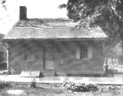
|
|
The McClellan residence
|
At that moment, Jennie was near the corner of Breckenridge
and Baltimore Streets and quickly learned that her brother
was being held captive. She approached his captors and
pleaded with them to release young Samuel. When she failed
to convince them to do so, she ran directly to the McClellan
residence where her mother was still tending to Georgia. Not
wishing to disturb her sister, Jennie called her mother out
of the house to explain the circumstances of Samuel's
arrest. Mrs. Wade went to the Town Square or "Diamond" as
it was known in the 1860s, and appeared before General Early
at about four o'clock in the afternoon where she was
successful in securing the release of her son. The horse,
however, was retained by the Southern Army. Samuel spent
the remainder of the battle safely in the cellar at James
Pierce's home.
Friday, June 26, 1863 had been quite a day for Jennie
Wade as well as the other people of Gettysburg. First,
there was the birth of her sister's child, then the rush to
repair her brother's oversized uniform in time for him to
ride off with his command, the unexpected arrival of
Confederate troops, the arrest of Samuel, the absence of her
mother from their home, and of course, the ever-present fear
of what the next few dreaded days might bring.
Early's Division departed from Gettysburg the next
morning. The townspeople's brief experience under enemy
occupation had reminded them of their vulnerable location
and provided a hint of what they might possibly experience
on a larger scale in the not-too-distant future. Some were
sufficiently alarmed that they immediately took measures to
protect their property against a return of the invaders.
As examples, Charles Will and his son, John C. Will,
proprietors of the Globe Hotel, moved a store of foodstuffs
such as sugar, hams, potatoes and other groceries to the
loft of their York Street hostelry. Charles Will even went
so far as to bury a supply of liquor in his garden under a
tow of young cabbage plants. James F. Fahnestock leased an
entire freight car in which he shipped his stock of goods to
Philadelphia. Similarly, Leonard H. Gardner noted that as
far away as York Springs 'horses were being hid in the woods
or hurried off to the river."
The Compiler newspaper of Monday, June 29 gave readers
new cause for their mounting fears when it reported that a
force of 13,000 Southerners with twenty-three cannon and a
long wagon train were encamped less than five miles
northeast in the village of Mummasburg. And all through
that calm, warm night the people of Gettysburg could see the
flicker of enemy campfires dotting the eastern slopes of
South Mountain, only nine miles to the west.
Less than twenty-four hours
later, on the eve of June 30, the first Northern soldiers
appeared in Gettysburg in search of Lee's Army which was
known to be in the vicinity. These men were General John
Buford's division of cavalry which had been sent ahead to
the area by General John F. Reynolds, commander of the First
Corps and the advanced wing of the Union Army of the
Potomac. After a long and dusty ride, the Federal
cavalrymen entered Gettysburg from the south by way of the
Emmitsburg Road where they were heartened by the sight of
groups of loyal citizens who cheered and applauded as they
approached. The horse soldiers, after placing pickets north
and west of town, went into bivouac on the Edward McPherson,
James J. Wills, and John Forney farms, just north and west
of the Lutheran Theological Seminary.
Early on Wednesday, July 1, damp morning mist still
lingering from the night before covered the advance units of
Confederate General Henry Heth's Division, about 5,000 or
6,000 infantrymen, as they drew near the hushed village. At
about eight o'clock in the morning they made contact with
Buford's 3,000 horsemen posted west of the Seminary. The
booming and crashing of the cannon and the scattering
carbine and rifle fire marked the beginning of the three-day
Battle of Gettysburg.
Soon after this initial conflict began, Rebel shells from
the batteries west of the now fully awake community began to
explode in and near the town. The commotion and serious
danger resulting from these flying projectiles suggested to
the populace that they should either hurry to their cellars
for protection or leave their homes promptly for other
refuges.
On that bloody morning, Jennie Wade decided that the
house of her sister, Georgia, which was south of the town
and near Cemetery Hill would be a much safer haven. It was
there that she carried Isaac sometime before noon, leaving
the boy with her mother. She then returned home to retrieve
her youngest brother, Harry, and also to gather some
essential clothing. As she inserted the key and turned the
lock of her familiar and comfortable house on Breckenridge
Street and dropped the key into the pocket of her dress, a
melancholy Jennie may have had doubts of whether this war
would permit her to ever return there again.
When she reached her sister's brick house which now
sheltered her mother, sister and the newborn son, as well as
the two boys, Jennie began to undertake the multitude of
chores which had to be finished. She also answered the
repeated knocks at the door by Union soldiers requesting
food. A witness noted that, "After furnishing [them] bread,
she brought water from the windlass well at the east side of
the house to the dismounted cavalrymen stationed in front.
She filled the canteens of these soldiers from a pail which
she rested on the sidewalk."
It was not long afterwards, only an hour or two, that
hordes of defeated Yankee troops began their retreat from
Seminary Ridge and Oak Ridge to the south side of town, an
ebb which was caused by the breaking of the army's right
flank in the afternoon. Standing along the dusty road and
drenched from the waist down, Jennie offered cool,
refreshing water to men who had been in the throes of
battle, and were now hurrying southward from the distant
ridges they had fought along all day. The sun was hot and
oppressive and drinking water was in great demand. Jennie
wore down a path to the well with her constantly empty pail
as the "Boys in Blue" repeated their parched requests for
water.
Near five or six o'clock in the afternoon, new battle
lines were being formed by both armies. The fighting of the
first day had resulted in an incomplete Confederate victory.
The Northern Army of the Potomac had been forced to retreat
through the town into reserve positions on Culp's Hill and
Cemetery Hill, both eminences, unfortunately, were within
easy rifle range of the McClellan household.
The growing sense of insecurity felt by Gettysburg's
inhabitants had been intensified as hundreds of these
demoralized Federal soldiers were seen fleeing through the
streets and alleys hotly pursued by the triumphant Rebels.
Albeertus McCreary remembered an officer who approached his
house and warned, "All you good people go down to your
cellars or you will be killed," at which McCreary said, "we
obeyed him at once." Sarah Broadhead's diary that night
recorded "bustle and confusion" and that "no one can imagine
what extreme fright we were in when our men began to
retreat." Union General Abner Doubleday, temporarily
commanding the First Corps, later described how as his
battered divisions passed through to the south,
panic-stricken women begged the dispirited men not to
abandon them to the Confederates.
For those living in the lower sections of the town, peril
of a different sort began to rear its ugly head. The
Southerners seized various houses for sharpshooting
purposes, seemingly unconcerned that the occupants might be
caught in the deadly hail exchanged with Union riflemen on
Cemetery Hill. John Will stated: "General Early warned the
citizens ... that we should go into our cellars and stay
within our houses ... He said that if at any moment the
sharpshooters had spied us we might be picked off."
Seventeen-year-old Anna Garlach remembered a Rebel soldier
who burst into her family's Baltimore Street residence and
climbed to the second floor. Anna's mother protested
saying, "You can't go up there. You will draw fire on this
house full of defenseless women and children." For this or
for some other reason, the man departed.
Henry Monath, a former member of Company I, 74th
Pennsylvania Volunteers, wrote of his situation just outside
of the McClellan house in an account published in 1897:
... our line lay back of the Battlefield hotel [Snyder's
Wagon Hotel], about 100 yards. The ground was an orchard
with large fruit trees. We were in close range with the
sharpshooters from the houses in the city. [We] ... received
orders ... to advance through the orchard of die hotel. The
timothy was very high and on our hands and knees, we crawled
forward to the hotel in great danger of being shot by the
sharpshooters from the houses. Then [Lieutenant Joseph]
Scheffer took half of the company into another house across
the street; while in the house we were shooting at the
rebels in other houses and they were firing at us ...
A Philadelphia newspaper created a similar scenario in
this article:
The houses in the immediate vicinity and an orchard on
the side of the hill were occupied by Union sharpshooters,
who bad advanced from their line of battle on Cemetery Hill
to engage a line of Confederate sharpshooters on the slight
rise on the south of the town. The house of Mrs. McClellan
was, however, never used as a protection for Union soldiers
[sic].
John Rupp, who lived in a frame house on Baltimore
Street about 100 yards north of the McClellan home, was a
tanner whose workshop was located at the rear of his house.
He described his encounter with these keen-eyed marksmen in
a letter a few days after the battle, to his sister, Anna,
who lived in Baltimore.
The rebs had my tannery occupied for four days; they had
the shop for a fort. It was full of rebs firing on out
pickets up at [Solomon] Welty's fence ... The rebs occupied
the whole of town out as far as the back end of my house.
Our men [occupied] that part of town which lays between our
house and the cemetery, which is not much as you know, and
the cemetery and all the high ground for miles around. Our
men occupied my porch, and the rebel [men] the rear of the
house, and I the cellar, so you can see that I was on
neutral ground.
Our men knew I was in the cellar, but the rebs did not.
I could hear the rebs load their guns and fire. There was
one of our men killed under my big oak tree in the lot, and
one in [Catherine] Snyder's meadow close to our house. The
rebs occupied Mr. [Samuel] McCreary's house, front which
they could pick off our men as they pleased. Our
sharpshooters found it out and kept a look out, and finally
shot one in Mr. McCreary's front upstairs and killed him on
the spot, and also killed two up in Mr. [George] Schriver's
house, next to Mr. [James] Pierce's. I sustained no loss in
stock, but the rebs broke all the glass and sash in the
shop. I gathered up a double handful of Minie' balls in my
dwelling after the battle, that were shot into it from both
armies. If you could have heard the shells fly over our
house from both sides! It was awful ... It was awful
thunder.
Not far away, the Wades' abandoned Breckenridge Street
house may have been taken over by Confederate soldiers
operating in the vicinity, for the structures along that
street offered a clear field of fire toward the Federal
positions on Cemetery Hill and along the Emmitsburg Road.
The McClellan house, the Wagon Hotel buildings, and the
Dr. David Study and Captain John Myers houses, all on the
northern slope of Cemetery Hill, were situated as if on a
curved salient within the Union defensive line. Georgia's
residence was dangerously only about fifty yards to the
east-southeast of this salient. Situated directly between
the office of the Rupp Tannery buildings and the Union
fortifications on East Cemetery Hill, the McClellan home
posed as an advantageous location for Union sharpshooters.
Most of these dwellings were likely secure hideouts for
Yankee sharpshooters firing on their Southern counterparts
who were slinking in and out of buildings on the south side
of town in the John Winebrenner house, the John Rupp tannery
site, and the Harvey D. Sweney home, among others.
As evening approached it became obvious that the house
which Jennie sought as a refuge was now quite the contrary.
Rebel infantrymen stationed in the Rupp tannery on the
opposite side of the street began firing at Union pickets
around the small red brick structure which protected the
women and children. The house was caught in a crossfire.
Due to this deadly hail of bullets, it was not long
before a few Union soldiers fell seriously and mortally
wounded within the McClellan yard and in a vacant lot to the
north. One eyewitness recalled:
... Virginia Wade went out of the house on the evening of
July 1st, and at the risk of her life brought water and
cheer to those about who had fallen ... William Otto
Kahlar, of Co. 94, N.Y. Inf., writing from Lockport,
N.Y ... , report[ed] that Virginia Wade gave him two biscuits
and a cup of water on July 1st, 1863. It seems that she
also gave a cup to Orderly Sergeant - Albert Brewer, who, it
is said, has the souvenir to this day.
Inside the house, the women were keeping themselves busy
so they had little time to be frightened. The scene was
described in this way:
Mrs. McClellan's bed had been taken down stairs in the
spring of the year and placed in the parlor. The mother and
her five days' old babe occupied the bed and the parlor room
at the outbreak of hostilities. As night came on and the
danger increased, the three women and three children found
comfort in each other's company. Without disrobing the
mother [Mary Wade] reclined on the bed with Mrs. McClellan
and the child; while Virginia rested on a lounge under the
window at the north side of the house. The two little boys
did not mind trundle beds on the floor. Harry Wade having
hidden under the bureau front time to time as the danger
from the shots increased.
The monotonous firing which reverberated around the
sturdy walls of the McClellan house on the afternoon,
evening and night of July 1, made test almost impossible.
The sweet oblivion of sleep became less and less attainable
with each cry and groan that sounded from the wounded
soldiers in the yard outside.
Shots from the Confederate outposts broke the stillness
of dawn on the morning of Thursday, July 2. Union soldiers
posted near the McClellan home returned the fire northward
toward the tannery buildings and up death-swept Baltimore
Street. During these dreadful days, the house was struck by
fully 150 enemy bullets but, so far, it had not been the
target of artillery, until that particular Thursday
afternoon when the Wade family was faced with even more
excitement. The splattering of rifle balls hitting the
walls of the house was suddenly interrupted by the crash of
a misdirected ten-pounder Parrott shrapnel shell likely
fired from somewhere along Oak Ridge, two miles north of
town. The screaming shell pierced a slanted roof over the
stairway on the north side, passed through the wooden
shingles and then penetrated into the plaster wall which
divided the two houses of the double dwelling. The hurtling
missile, continuing in its destructive path, plowed into the
brick wall on the south side of the house, fortunately
without exploding. The impact shook the twenty-one-year-old
structure as if by an earthquake as it finally came to a
halt above the exterior extension of the roof, where it
would remain for over fifteen years.
When she heard the crash of falling bricks, splintering
wood and plaster raining down from the ceilings and walls
upstairs, Jennie Wade, in that instant, fainted onto the
floor.
Meanwhile the other occupants of the damaged house
muttered silent prayers of gratitude that the treacherous
projectile failed to explode. Had the shell's fuse
functioned properly it could have killed or injured the
Wades or Mrs. Catharine Freyburger McClain and her four
children who lived in the southern portion of the
double-dwelling. Ironically, thirty-four-year-old
Catharine, who had just narrowly escaped death, was the
widow of Isaac McClain, a Pennsylvania soldier who had been
killed at Suffolk, Virginia, a short time prior to the
Battle of Gettysburg.
This erratic firing between the opposing lines was kept
up during the eighty degree heat of the second day of the
battle. Miraculously, there were no injuries to the
inhabitants of the McClellan house, despite the risks taken
by Jennie Wade as she carried water to the wounded Federals
lying near the house and performed other brave acts of
kindness, all the while dodging venomous bullets.
As the sultry day wore on, Jennie baked numerous batches
of bread to feed the ravenous soldiers who were constantly
banging at the door. Soldiers, it must have seemed to her,
were always hungry. As her flour supply diminished, it
became apparent that she had created an insurmountable
demand for the home-baked bread the men had tasted and found
so delicious. Consequently, Jennie and her mother were
obliged to start more yeast which was mixed into sponge late
on July 2 and left to rise until the next morning.
Frequent alarms and sporadic gunfire during that evening
deprived the family of yet another night of uninterrupted
rest. Tense and restless amidst the noise, the exhausted
women lay partially awake wondering what new terrors the
next day might bring. Jennie would have been even more
restless had she known that only a mile or so away from
where she slept, John Wesley Culp, present in the Rebel
lines, possibly carried a message from Jack Skelly that was
intended only for her. But Jennie did not know these
things, and Wesley Culp was now encamped with his brigade
only a short distance away from where his friend fitfully
slept.
On that night of July 2 Wesley had obtained permission to
enter Gettysburg to visit his sister, Barbara Ann Myers on
West Middle Street. Just across the street lived Johnston
and Elizabeth Skelly, the parents of his old schoolmate,
Jack. This family was hiding at that moment in the
commodious cellar of their neighbor, Harvey D. Wattles.
Staying with Barbara Ann "Annie" Myers that evening was
her younger sister, Julia, who later sought safety in the
York Street cellar of her cousin, Mrs. William Stallsmith.
Their parents, Esaias and Margaret Culp, were not alive
during the Battle of Gettysburg. Wesley's, Annie's, and
Julia's mother succumbed to "dropsy of the chest" in 1856
and their father, a tailor, died of paralysis in 1861. From
what is known, it appears that Wesley Culp was very close to
both of his sisters whom he visited on that July 2nd evening
in Annie's home.
A newspaper account would later detail Wesley's emotional
visit.
That night there stepped jauntily into the Myers' home a
sturdy, stocky figure, sun bronzed and weather beaten and
clad in the rusty and somewhat tattered butternut, the
uniform of the Army of Northern Virginia. There was a
momentary pause as the stranger entered - and then a glad
look of recognition as the sister cried, 'Why Wes, you're
here!' and then brother and sister were clasped in each
other's arms as though there were no such things as war and
horrors, and that deadly battle had been close at hand and
would reopen with the day ... Anna greeted him warmly, but
warned that some relatives had threatened to "shoot the
rebel on the spot- if they saw him. Wes smiled, ate his
dinner ... The talk fest began ... The hours passed. It
grew late and finally Wes said he would have to go.
"Can't you stay until morning?' pleaded Mrs. Myers.
"No, Annie, I can't; but I'll come back in the morning,
and I came near forgetting one important matter. Coming up
through Winchester, I ran across Billy Holtzworth who was a
prisoner in our hands. He told me about Jack Skelly being
wounded and I hunted for poor Jack and had him taken to the
hospital where we left him in charge of the Federal
surgeons. He was badly shot through the arm. He gave me a
message for his folks which I am to tell to his mother. It
is late now and we will not disturb them, but you tell Mrs.
Skelly I will be back in the morning and have her here. I
want to talk to her and I'll be back sure."
"No message from Jack for anybody else in Gettysburg,
Wes?" queried his sister. 'Never mind," he replied, "you'll
get all the news from Mrs. Skelly." His sisters promised to
give her the message, but Wesley Culp said he had to deliver
it in person.
"You ought to stay with us all night, Wes," called Mrs.
Myers after him. "Come back. We may never see you again ...
But Wes was obdurate and made no response as he strode
away in the darkness and returned to his company in line
with the Stonewall Brigade [now commanded by General James
A. Walker].
John Wesley Culp's sister, Annie, regrettably was only
too correct in her premonition the night before of her sweet
brother's fate, for,
... on July [3], [at around 8 o'clock in the morning]
Wesley was killed on Culp's killed [owned by Its second
cousin, Henry, and Peter Raffensberger]. Wesley's outfit,
the famous "Stonewall Brigade" attempted to seize the hill
from the Union forces. Wes was on the skirmish line when he
was mortally wounded.
Almost four hours earlier, Jennie Wade, completely
unaware of the nearness of Culp or the possibility of a
message from Jack Skelly that would fall silent with the
death of her churn, Wesley, had already awakened to yet
another day of bleak war. At four o'clock on Friday, July
3, 1863, the weary occupants of the McClellan house were
still half asleep and no less apprehensive than they were
the previous night. Jennie and young Harry cautiously
slipped outdoors at about four thirty to fetch wood so that
the fire could be revived in order to bake the bread dough
which had been prepared the evening before.
When they returned to the still-warm kitchen, Jennie
kneaded the dough and left it to rise again. Soon afterward
a hungry Yankee soldier who had been driven back from one of
the advance picket posts, came to the door asking for bread
and was told to return later for a share of freshly made
biscuits. Jennie was as generous as she could be when
handing out these small kindnesses although there had been
many opportunities to charge money for the food, as other
Adams County inhabitants were doing. Even when the last
soldier had called for nourishment at nine o'clock the night
before, Jennie unselfishly saved only what was needed for
the morning meal.
After a frugal breakfast of bread, butter, applesauce and
coffee, Jennie rested on the lounge in the parlor near the
north window where she began her customary morning religious
devotions. She read from Psalms XXVI to XXX commenting
aloud, as a young person might normally do, on different
passages. One verse in particular was her favorite:
The Lord is my light and my salvation whom shall I fear?
The Lord is the strength of my life, of whom shall I be
afraid? ... Though war should rise against me, in this will
I be confident ... I had fainted unless I had believed to
see the goodness of the Lord ... Wait on the Lord; be of
good courage, and he shall strengthen thine heart.
No one will ever know whether she opened her bible at
this particular page by chance or intent, but the passages
were singularly appropriate, for even now an invading host
was encamped within a mile of where she sat, and war had
indeed risen up against her, and she had need of all the
"good courage" that was to be found in her own heart.
Jennie most likely had no other wish then to be where she
was at that moment. All the men she cared for - her eldest
brother, her brother-in-law, and the man she loved, were all
somewhere in the battle lines of the nation, and here was
her opportunity to give something to the country's cause.
But hearing such unpleasant words made her sister very
uneasy about the undeniable danger they faced. Georgia
begged her mother to command Jennie to stop and not
intensify the already strained and uncomfortable situation.
And, quite appropriately, the last words Georgia heard her
sister utter were, "If there is anyone in this house that is
to be killed today, I hope it is me, as George has that
little baby."
Near or about seven o'clock, the windows at the north
side of their house unexplainably came under fire again by
the Rebel marksmen. In mere seconds every pane of glass was
shattered. One intruding bullet entered the front room and
struck the bedpost, then hit the wall, and finally fell, an
uninvited guest, onto the pillow at the foot of the bed
where Georgia and her infant lay. The two had moved there
earlier as a measure of safety, at Jennie's suggestion,
because she believed that shots might come through the west
door and window at any time. The bullet that burst through
the north window was actually still warm when Mary Wade
gathered it together, as a memento, with some wooden
splinters from the damaged bedpost.
The mantel clock had just chimed eight times when Jennie,
determined to fulfill her commitment in spite of the
musketry fire, started the preparations necessary to make
the biscuits she had promised earlier. She slowly blended
the flour and baking soda at her mixing tray as she had so
many times the day before. The vigorous kneading of the
dough was almost finished when Jennie asked her mother to
start the stove fire for baking.
It was a short half hour later, almost eight thirty, when
a Confederate soldier, possibly one of the Louisiana
infantrymen who had, throughout the last two days, been
posted in buildings on both sides of Baltimore Street in
southern Gettysburg, fired his weapon. No one will ever
know his intended target. In fact it is possible he did not
even have one, having been posted there to purposely harass
and intimidate Union soldiers along the north slope of
Cemetery Hill. Indeed, the man may never have known or even
cared where the one-ounce, soft-lead projectile came to
rest. But in a split second, long before the large white
puff of powder smoke dissipated from his weapon, Jennie Wade
was dead. The hot lead had completed its deadly work, and
the unknown assailant went about his dirty business, never
realizing that a young woman, an innocent non-combatant, had
just passed from mortal life. What should have been a
solemn, tranquil or sad moment, was instead just another
musket shot, hidden in its loud moment by the thunder of
many others. To the killer, the life gone would have been
simply another death undetected among so many, like the star
that explodes with an inaudible bang in the silence of deep
space.
|
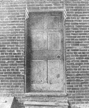
|
|
Door through which the bullet that killed
Jennie Wade entered. The bullethole is circled.
|
The bullet itself had penetrated the
outer door on the north side of the McClellan home and also
the door which stood ajar between the parlor and the
kitchen. It struck Jennie in the back just below the left
shoulder blade. Her heart was pierced as the missile passed
through and embedded itself in her corset at the front of
her body. Her hands were still covered with the dough,
which, along with the flour, was now scattered across the
room.
At the sounds of the bullet ripping its way through the
wooden panels, Mrs. Wade turned from her work at the fire
just in time to see her daughter fall. A hasty, terrifying
examination made her realize what had happened. Almost
calmly, she walked to the parlor and announced, "Georgia,
your sister is dead." Overcome by the almost unthinkable
news, Georgia screamed in alarm, a scream that brought
several groups of Federal soldiers bursting into the kitchen
from various places in and around the building. Upon
hearing these cries of distress, one squad of New York
infantrymen broke through the north door, which now clearly
indicated the passage of the fatal missile. The dirty,
battle-weary men stood solemnly looking at the body on the
floor. Although dead bodies were no novelty to them, this
one was different. Here was a woman, a Northern girl at
that, who could easily have been a wife or sister of one of
their own comrades.
After studying the situation, and a hurried discussion,
they took charge at once. The men instructed the women to
go quickly to their neighbor's cellar on the opposite side,
the safer side, of the double-dwelling. How to get there,
though, posed a problem. Normally, they would walk outside
and around to the southern end of the house, then descend
through the outside cellar doors. But now no one could exit
through Georgia's dangerously exposed north wall as the
Rebels were still showering bullets from that direction.
However, it was observed that the shell which struck the
house the day before had tom an opening in the wall upstairs
that joined the dwellings. The soldiers quickly enlarged
this tagged hole by tearing and kicking at the plaster and
lath. Then the women were told to climb Georgia's stairs,
pass through the opening and walk down the other stairway on
the McClain side of the house where they could slip outside
through the kitchen door to the cellar entrance a few feet
away. In effect, the shell that came close to killing the
Wade family the day before, now enabled them to protect
their lives, in the end, by carving an interior route to
safety that was undetectable by their adversaries.
|
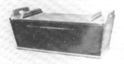
|
|
The dough trough at which Jennie was working
when she died.
|
Mary Wade agreed to obey as long
as Jennie's body accompanied the family. So began their
dangerous and morbid trek. With the baby in her arms and
without assistance, Georgia ascended the stairs while a
soldier followed carrying a split-bottom rocking chair. At
the upstairs opening she handed the tiny bundle to another
soldier as she crossed to the other side and then reclaimed
her child. Mrs. Wade and the wide-eyed boys soon followed.
Keeping their promise, the men, as tenderly as possible
under the circumstances, carried Jennie's body through the
same passage. Her body had been carefully wrapped in a
quilt which Georgia had pieced together when she was only
five years old.
Once safely in the cellar, Jennie's corpse was placed on
a wooden bench that was used to store milk pails and crocks.
Still wrapped in the quilt, the pockets of Jennie's apron,
unbeknownst to the people in the room at this time, held a
photo of Corporal Skelly, a purse, and the key to the Wade
home on Breckenridge Street. The lifeless body remained
just inches away from the pathetic, dismal faces of her
loved ones, there in the dim uncertain light of the cellar,
from eight thirty on that morning of Friday, July 3, until
one o'clock in the afternoon of the following day. For
eighteen seemingly endless hours a vigil was reluctantly
kept until finally the somber group felt safe enough to come
out of their dreary hiding place.
Urged on by the hungry soldiers, Mary Wade consented to
return with them through the passageway to the desolate room
upstairs stained with her child's blood. And with a heavy
heart she forlornly baked fifteen loaves of bread using the
dough which had been recently prepared by the daughter whom
she loved so much. She must have reminded herself that
Jennie would not have wanted the brave soldiers to go
hungry. As she worked, Mrs. Wade kept her head turned away
from the sinister dark stain on the cleanly scrubbed floor.
Elsewhere in Gettysburg, civilians were contending with
ordeals unlike any they had ever experienced. In the early
afternoon of July 3, an artillery duel commenced involving
approximately 230 cannon, which created a roar that seemed
to Sarah Broadhead "as if heaven and earth were crashing
together." For an hour and a half or longer it continued,
appearing to the Broadhead family as though "the terrific
sound of the strife" would never cease.
Then as many of the guns fell silent, the Confederates
massed approximately 12,000 men, many of them veterans of
past battles, to hurl against the left center of the Army of
the Potomac. This final and dramatic infantry assault which
could have reversed the course of the war and decisively
altered history, was soon in progress and its end quickly
settled the conflict. By four o'clock that afternoon the
Rebel attack had been repulsed, resulting in roughly 10,000
casualties for both sides. With the exception of some
cavalry fighting on the flanks, armed combat at Gettysburg
had come to an end.
The town's civilian population, however, like the
thousands in both armies, could not have known that the
engagement was finally over. Throughout the evening hours
all waited fearfully, while Sarah Broadhead wrote in her
diary, "It would ease the horror if we knew our arms were
successful."
During the evening hours rumbling sounds rising from
Gettysburg's now desolate and filthy streets clearly
indicated a vast movement of wagons, ambulances and
artillery pieces. According to William H. Bayly, who lived
on a farm three miles north of Gettysburg, wagon trains,
stragglers, and camp followers began "drifting back in the
direction whence they came." On the following morning, he
found "that our host of visitors had, like the Arab, folded
their tents and quietly stolen away."
Very early on Saturday morning, the eighty-seventh
birthday of the country, sometime near four o'clock, the
Skelly family awakened to the martial music of the fife and
drum. From their windows they saw a band "with the glorious
Stars and Stripes fluttering at the head of the lines."
Their reaction was, "Ye gods! What a welcome sight for the
imprisoned people of Gettysburg." As the morning progressed
and the Rebel evacuation clearly was underway the citizens
were, in the words of Robert F. McClean, "a happier set of
people you never saw."
Yet the dread and tension did not disappear entirely.
Matilda "Tillie" Pierce, a fifteen-year-old that memorable
year, said, "We were glad that the storm had passed and that
victory was perched on our banners but, oh, the horror and
desolation that remained." For most of the population the
worst was yet to come - many grim weeks of struggling to
cope with the aftermath of war - with over twenty thousand
wounded soldiers in and around the village, and the
thousands of decomposing corpses of men and horses and mules
which had been slaughtered.
An aura of melancholia
surrounded the little brick house on Baltimore Street. The
grief-stricken Wade family was preoccupied with their own
single casualty - Mary Virginia Wade. And on July 4,
Georgia's twenty-second birthday, it had rained early in the
morning and then again from 2:15 in the afternoon until
about four o'clock, which added to the overall misery of the
situation. An hour after the rain stopped, a small
gathering consisting of Jennie's mother, her sister, her
grandmother Mrs. Elizabeth Filby, her brother Harry and
about six or eight soldiers stood in the humid seventy
degree weather near a muddy, gaping grave which had been
prepared in the now trampled garden at the rear of the
house. A curious incident accompanied the burial:
|
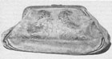
|
|
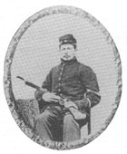
|
|
This purse and photograph of Jack Skelly were in Jennie's
possession when she died.
|
Jennie's body had been carried from the cellar and placed
in a coffin on the brick pavement outside the cellar doors
on the south side of the house. It is believed that
Jennie's casket was originally intended for a Confederate
officer with the initial construction done by Confederate
soldiers. This coffin was completed by Mr. Charles Comfort
of Gettysburg.
Since preparations were not made for the cleansing,
embalming or redressing of Jennie's body, it was merely
placed in the coffin with the quilt snuggly wrapped about
it. "The dough ... was still on her hands and arms as
Jennie was lowered into the ground in the yard of her
sister's home." " ... There were no prayers, no hymns.
Jennie's mother, her sister, and her two little brothers
stood silently with bowed heads as the clods fell on the
pine box."
Jennie's body would remain in this primitive grave from
the afternoon of July 4 until January of the following year
when it was removed to the cemetery adjoining the nearby
German Reformed Church. A story kept alive by the family
for many generations was that, "when Jennie's remains were
moved from the back yard ... , the body had mummified" or in
the vernacular of the day, "she had turned to stone."
In November of 1865, fully two years to the month since
Abraham Lincoln had stood in the same cemetery to deliver a
eulogy over the graves of thousands of fallen warriors,
Georgia's husband, Louis, and her brother, John, transferred
Jennie's body to the family lot John had bought in the
Evergreen Cemetery where it still lies today.
Even after the pathetic burial of her daughter,
additional trouble followed Mary Wade as she returned to her
house on Breckenridge Street. On the evening of July 5,
just twenty-four hours since she stood by the grave of her
child, Mrs. Wade entertained a visitor, Reverend [Walter S.]
Alexander, a delegate of the U.S. Christian Commission, who
quite likely had come to comfort the woman during her time
of grief. Also in the house was Major Michael William
Burns, 73rd New York Infantry, who had commanded his
regiment during the late battle. It is still a mystery as
to why Burns was in the Wade dwelling and not with his
regiment. But there is no doubt some sort of altercation
took place as a grossly intoxicated Burns assaulted the
minister and inflicted a serious sword wound to his head.
Burns was promptly arrested, but the brutal scene must have
finally broken the spirit of Mary Wade.
The long, hot summer days following the battle were
chaotic, unnerving and turbulent among many inhabitants of
the community. In a strange reversal of the truth, the fast
newspaper story about the shooting actually described
Jennie's killer as a Union marksman. The following
interesting account appeared on July 7, 1863 in the Adams
Sentinel.
But withal, we have been called to part with some. We
have learned only of the following: - Killed, Miss Virginia
Wade by our own sharpshooters ... The suffering and
afflicted need not be assured that they have the hearty
sympathy of the entire community
Quickly, the news of the only civilian killed among them
was carried by soldiers, newspaper reporters, neighbors,
friends and even some townspeople who pretended to know
Jennie. Throughout the days, weeks, months and years to
follow, some enlisted men and officers would recall Jennie's
death in their journals and regimental records. For
instance, Captain Emil Koenig of the 58th New York Infantry,
11th Army Corps, submitted this story in Ms report of the
three-day battle:
... At 6 o'clock in the morning, [July 3] we were ordered
to the right of the road leading to Gettysburg. We were
posted behind a stone fence to the left of Captain [Michael]
Wiedrich's [New York] battery. Lieutenant [Carl] Schwartz,
with one company, was sent to take possession of the next
houses of the town to the left of the road. The enemy's
sharpshooters kept up a brisk fire at these houses, and
killed a girl who was living in one of them. Our men
escaped uninjured, although they had possession of the house
until the end of the battle, and the house was completely
pierced by bomb-shells and rifle-balls.
John Y. Foster, a civilian from Philadelphia, arrived in
Gettysburg on the evening of July and 10 worked with the
U.S. Christian Commission at the Second Corps field hospital
three miles south of Gettysburg. He recounted this story:
... a woman named Wade was engaged in baking bread for
our troops in a house situated directly in range of the guns
of both armies. The rebels had repeatedly ordered her to
quit the premises, but she had invariably refused to do so.
At length the battle opened, and while still engaged in her
patriotic work a ball pierced her loyal breast, and she fen.
Was not that genuine heroism? ...
Robert S. Robertson, a 93rd New York Infantryman, wrote
in the July 6 entry of his diary:
|
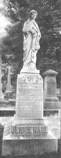
|
|
The Wade monument at Gettysburg.
|
... some of the women who staid
home proved to be heroines and did all in their power to aid
the wounded ... One young girl, I heard, was killed while
making bread for the soldiers, the house she was in having
been in musket range of the rebels.
Abram P. Smith, 76th New York Volunteers, noted in a
regimental history that:
... The people of Gettysburg ... are heartily loyal. At
many of the doors and windows, the ladies, lads and girls
stood through that long, hot day, and passed water and food
to the Union troops. The men of the Seventy-sixth will not
soon forget, and I should fail in the performance of my
duty, did I not mention the "nameless heroine,' who, with a
cup in each hand, so busily dealt out water to the thirsty
boys, the tears of sympathy streaming down her lovely
cheeks, as the wounded soldiers came hobbling by, until,
pierced by a rebel ball, she fell dead by the side of her
pail! We regret that we cannot hand down her name to
posterity, even in these humble pages. The memory of her
deeds and heroic sacrifice shall remain green, though her
name is unknown.
Civilian Susan T. McClain was a two-year-old baby who
lived with her mother and three siblings in the other half
of the McClellan house that July of 1863. She recalled
being told that the killing of Jennie Wade occurred this
way:
My mother and my three brothers and sisters were living
in the basement at the time because a shell had gone through
the house only a few days before. Miss Wade was baking
bread in the kitchen upstairs.
She had just stepped to the door with an armful of dough
to ask her sister if she thought that would make enough
bread when the bullet struck her. She died very quickly.
[My] mother told [me] the slain woman was taken to the
basement, where she lay for two full days before some of her
fellow townsmen buried her in the garden.
I'm not sure about it though ... I was too young to
know much about what was going on.
Another account of a civilian learning the news of
Jennie's death was that of Elizabeth Thom. Her husband,
Peter, was away in the army near Harper's Ferry, Virginia at
the time of the Gettysburg battle and Mrs. Thorn, with her
family, lived in the Gateway House while they tended to the
maintenance of the Evergreen Cemetery. When the hostilities
forced them to move southward out of town for safety, Mrs.
Thom approached the Henry Beitler house looking for
something to eat for her bedraggled companions. After a
knock on the door ...
An officer came out and asked us what we wanted. He had
been in town and said to us, "Did you know Jennie Wade?" I
said I knew her, that she lived near my home. He then told
us she got killed. He asked whether we knew Maria Bennet,
that she [too] got killed but this turned out to be a false
report ...
John Rupp, quoted earlier, who had spent several days in
his cellar just yards from the McClellan house, mentioned
news of Jennie's death in a letter dated July 19, to his
sister, Anne, who lived in Baltimore. The sharpshooter
whose fatal bullet Mt Jennie was allegedly in, and has
commonly been noted to have been at, Rupp's tannery office
when he fired the now well-known shot.
... Virginia Wade was killed while kneading up her
bread, for her sister, up in the house that Ellen Freeberger
used to live. Several others were hit on the shins with
spent balls, where, if they had stayed in their houses,
would not have happened [to] them. I can't tell you all; it
would take me a week to do so. Our house is pretty well
riddled; though balls passing through our bedsteads, no
shells struck it.
A neighbor of Georgia McClellan, four-year-old Rosa A.
Snyder, lived with her mother Catherine, and her five
brothers and sisters on the east side of Baltimore Street,
just before it turned into the Baltimore Turnpike. Nearly
eighty years later, Miss Snyder remembered:
... The next-door neighbors, the Wade family, had gone to
their cellar too, but not in time to save the life of
16-year-old [sic] Jennie Wade. Jennie was in the kitchen
kneading dough for "shortcake.' A bullet entered the outside
door of the Wade home, penetrated the bedroom door which was
opened into the hallway and struck Jennie in the back.
Jennie, the only civilian killed in Gettysburg, fell within
a few feet of her mother, some pieces of dough still in her
fingers ...
Another woman, Sophronia E. Bucklin who worked as a
volunteer nurse after the battle, noted, "ŠSometimes we
went, in our rambles [for food and supplies], to various
stores; [and] out into the surrounding country. In one of
these I saw the hole in the door made by the bullet which
struck the maiden, Jennie Wade, to the heart, as she stood
moulding her bread at the table ... "
|
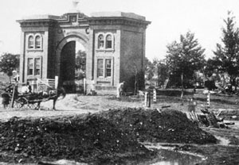
|
|
Evergreen Cemetery at Gettysburg, where Jennie
Wade is buried.
|
At the age of seventy-seven in
1928, Mary Warren Fastnacht wrote her memories of the
battle, which occurred when she was twelve years old. She
recalled the trip from her father's house on West Middle
Street to her grandfather's house on Baltimore Street: "I
will never forget that walk in the early morning. Men and
horses were lying in the street. Up at Grandfather's home we
all had to go to the cellar. While there word came that
Jennie Wade had been shot, just two blocks away. She was
buried in their garden until later removed to Evergreen
Cemetery ... "
Hugh M. Ziegler dictated his reminiscences in April and
May of 1933. He, it seems, watched the confusion of the
battle through the eyes of a ten-year-old. "Few of the
citizens were injured and but one was killed. Jennie Wade
who was in her kitchen baking bread for the soldiers was
killed by a stray bullet that came in at one of the
windows."
As time went by, people began to embroil the simple saga
as they knew it or thought it should be, into a mudslinging
contest to achieve personal gain, and to trumpet their own
acts of patriotism whether true or false. Through the use
of personal attacks these publicity mongers criticized each
other while hiding behind their political parties, their
community as a whole, or through individuals like John
Burns. Some outright falsehoods resulted from these
attacks, the nature of which belittled the deeds of some to
exaggerate those of others. Many would say it was a good
thing Jennie was not alive to hear some of the slurs that
were thrown her way. For instance, there was a heated
exchange of journalistic fire between the Harrisburg
Telegraph and the Adams Sentinel and General Advertiser of
Gettysburg. The Harrisburg paper claimed,
|
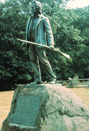
|
|
Statue honoring John Burns, an elderly Gettysburg
resident who took up arms when the war came to his
hometown.
|
Old [John] Burns was the only man of Gettysburg who
participated in the struggle to save the North from
invasion, while innocent Jenny [sic] Wade was the only
sacrifice which the people of that locality had to offer on
the shrine of their country ... Let a monument be erected
on the ground which covers her ... If the people of
Gettysburg are not able alone to raise the funds to pay for
a suitable monument for Jenny Wade, let them send a
committee to Harrisburg, and our little boys and girls will
assist in soliciting subscriptions for this holy purpose ...
In an obviously defensive rebuttal, the Sentinel of
December 1, 1863 stated:
The friends of Mss Wade have the deep sympathy of our
people, while Mr. Burns' patriotism receives its full mead
of praise, and no community has given evidence of its
willingness to render both promptly and fully - ribald
newspaper correspondents to the contrary notwithstanding. We
do not know that it is necessary for our people to go abroad
to seek inspirations of patriotism of duty. At all events,
we feel assured, they would hardly go to Harrisburg for
lessons in this respect, if one fourth of what has been
written and printed of the doings of the goodly citizens of
that place during the memorable days of June and July, be
true ...
While doing justice to the patriotic impulses of John
Bums - an old man of 70 years - it is not necessary to utter
the falsehood that he "was the only man of Gettysburg who
participated in the struggle to save the north from
invasion." Gettysburg has sent to the field, since the
beginning of the War, more than one half of its voting
population. The blood of her sons has freely mingled with
that of the heroes of the Republic on more than one hard-
fought field. Can the Telegraph say as much for Harrisburg?
The death of Mss Wade is made the occasion of another
equally malicious assault on the reputation of our people,
in the statement that this -was the only sacrifice which the
people of that locality had to offer on the shrine of their
country." - Possibly it n-tight have suited the fancy of the
Telegraph editor to have recorded the slaughter of more of
our innocent women and children by rebel bullets.
Fortunately we can boast of but one. But if Mr. Bergner
means to affirm that the ladies of this community - town and
county - made few or light sacrifices during the terrible
scenes of July last, he simply lies - as thousands of
suffering, wounded soldiers, and hundreds of Christian men
and women, summoned here on errands of love and mercy, can
well attest ...
And in that same issue of the paper, a short article
directly followed the above mentioned, written from the
Lutheran Missionary in Philadelphia, which read:
The hospitable people of Gettysburg kept open house
during the crowded days ... Immense was the mass of people
thrown upon the community, of some two or three thousand
souls, we have not yet heard a person speak in any other
than the warmest terms of the comfort he enjoyed and the
welcome he received. The people of Gettysburg need not fear
comparison with those of any town or city in our State.
Their conduct before the great battles, and during them, and
since then, has been in the highest degree honorable. The
miserable libels which were invented to their injury, have
simply directed attention more closely to their real
excellence.
And so it went. Gettysburg and Adams County would
continue to proclaim, defend, and even justify the conduct
of its citizens for years to come.
John Wesley Culp was not the last of Jack Skelly's
visitors in that hospital situated on Virginia's enemy soil.
John Warner, the 87th Pennsylvania Infantry's sutler,
visited Jack on Saturday, July 11 at Taylor House Hospital.
Warner described Skelly as badly wounded and delirious at
the time of his visit. Jack did not recognize Warner who
was told by the surgeon that he did not have long to live.
Warner remembered:
When I saw him he did not seem to be suffering, just
lying in a stupor. The boys in the company and I knew he
corresponded regularly with Jennie Wade, but we did not know
of their engagement and intended marriage.
... Wes Culp had carried the tidings of Jack being
wounded. If he had any other messages of course I had no
chance to know of them. Wes saw Jack when he was able to
talk and knew his condition.
Johnston Hastings Skelly, Jr. died the next day, July 12,
just nine days after Jennie's and Wesley's untimely deaths.
How tragic, or perhaps merciful, that these three young
friends were completely unaware of each other's fate. The
note or verbal message given to Wesley Culp by Jack Skelly
was never delivered. Since they all died just a few days
apart, and Wesley refused to divulge the contents to anyone
but the intended recipient, there was no way to ever
determine just what Skelly wanted his mother to know, or, as
some believe, what message poor Jack Skelly wanted his
mother to pass on to Jennie Wade.
|
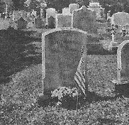
|
|
|
|
Jack Skelly's grave
|
Skelly was initially buried in the
Lutheran Cemetery in Winchester, Virginia, but by November
of 1864, Jack's brother, Daniel, returned his body to
Gettysburg where it was interred in the Evergreen Cemetery,
only a few hundred feet from Jennie's beautiful gravesite.
On April 15, 1880, the trustees of the Methodist Episcopal
Church on East Middle Street sold their old meetinghouse to
the local chapter of the Grand Army of the Republic
(G.A.R.), a Civil War veterans organization. The "Corporal
Skelly Post No.9 G.A.R.," retained the building for
fifty-three years and honored the memory of Johnston
Hastings Skelly, Jr. by bearing his home.
The last few days of that bitter July, 1863, and just
three weeks after the death of her sister, Georgia left her
baby with her mother to serve as a nurse to the sick and
wounded soldiers in the Adams County Court House at
Gettysburg, which was being used as a hospital. She
remained there for one week when she was transferred to the
United States Army General Hospital at Wolf's Grove, known
as Camp Letteman, two miles east of Gettysburg. Georgia
worked hard intermittently for the next two years tending to
wounded and ill soldiers on several other battlefields,
offering her compassionate assistance wherever she could,
while her husband was away serving in the Army.
Her mother, at home in Gettysburg with the baby, Louis
Kenneth, keeping her busy, was surprised and honored to
receive a letter from President Lincoln shortly after the
battle expressing his praise and condolence in the death of
Jennie while so diligently serving the soldiers of her
country. And when Lincoln visited Gettysburg on November
18-19, 1863 to dedicate the Soldiers' National Cemetery, he
requested that Georgia McClellan sit with him on the
speakers' platform among the other dignitaries. She did not
want to go, but her mother -insisted since the President
invited her. Later, Georgia said that she would have left
prior to President Lincoln's address if she could have found
a way to slip off the platform while the principal orator
Edward Everett recited his long but eloquent speech.
In 1867 Georgia and her husband, Louis, moved to Denison,
Iowa to join their friends, the H.C. Laub family who had
gone west from Pennsylvania a few years earlier. During
those early days on the plains Georgia was the only nurse in
Denison and frequently was pressed into the medical service
she had come to know so well. Georgia and Louis had five
children: Louis Kenneth (the baby born just before the
battle), Virginia Wade, James Britton, Nellie G. and John
Harry. Engaging in Women's Relief Corps work after the war,
an auxiliary to the Grand Army of the Republic, Georgia held
many offices in this organization at the national, state and
local levels. In 1898 the 10th New York Cavalry made
Georgia an honorary member of their veterans organization.
This unit had been quartered in Gettysburg during the winter
of 1861-62 and had come to know the Wade family through the
kindnesses they displayed to the soldiers.
Georgia Wade McClellan died in Carroll, Iowa on September
7, 1927, at the age of eighty-six. She never received her
nurse's pension in person, as it arrived the day after she
died, but she had received a widow's pension following the
death of her husband in 1913.
Like Georgia, all of her brothers also moved west and
lived out the rest of their lives there. John James Wade
who last saw his sister Jennie as she devotedly altered his
uniform on June 26, 1863, had, himself, moved to Denison,
Iowa in 1866. From there he traveled west with the Union
Pacific Railroad to California. He later resided in Nevada
for a while until he moved again and married a Texan, Julia
F. Rush, on March 17, 1875 in Clover Valley, Colorado. They
made their home in Mancos, Colorado for forty-two years
where John and Julia had five children who he supported
through various trades as farmers, carpenter and a miner
over the years. He died in Kayenta, Arizona in Navajo
County on September 2, 1925.
As he grew older, brother Samuel, who as a
twelve-year-old was arrested then released for trying to
save his employer's horse from the enemy's grasp, lived in
Gettysburg with his wife, Elizabeth Johns or "Lizzie" from
York Springs, Pennsylvania, whom he married on November 17,
1869, a time when he worked as a housepainter. Later, they
moved to Peoria, Illinois, where he died some time around
1927.
Harry, the eight-year-old brother who witnessed his
sister's death in the McClellan house kitchen, first moved
to Nebraska and then to Seattle, Washington, where he
married his wife, Mary. He died there at the age of
fifty-five, on September 26, 1906.
Very little is still known about James Wade, Sr.,
Jennie's father, who died on July 10, 1872 at the age of
fifty-eight years, eleven months. He spent his last years a
sick, broken man, in the Adams County Alms House, listed in
the register as a "pauper." James Wade was buried on July 11
in the Evergreen Cemetery, Lot 79, Section A.
If there was anyone who felt the true depth of tragedy in
the loss of Jennie, it was Mary Wade. Not only did she lose
a loving, selfless daughter, but she felt the void of
Jennie's financial support in a time when every penny went
to maintaining the family's stability. Twenty years after
Jennie's death her mother was granted monetary aid from the
government as retribution. In July of 1871, Mary Wade
collected the then large sum of $1,440 as compensation of
$8.00 per month since the day Jennie was killed. The
pension report testified that Jennie was, "a healthy girl,
very faithful, steady and expert with the needle, who at the
time of her death and for some years previous thereto,
contributed materially to the support of the family."
Johnston H. Skelly, Sr. and William T. King, merchant
tailors, made oath in the report that both Mary and Jennie
Wade had worked for them at the tailoring trade.
Mary may have found some comfort in the company of her
parents, Samuel and Elizabeth, who resided in a house near
where Jennie had been killed. Despite the war and other
hardships, She continued to sew and do laundry which enabled
her to keep her house on Breckenridge Street until she died
in 1892, when she was seventy-two years old. Mary Ann Filby
Wade was buried in the Evergreen Cemetery on December 31,
1892. In her last will and testament, Mary Wade's property
was divided equally among her children and in January, 1893,
as power-of-attorney, her daughter, Georgia, sold the
property to Adam Ertter who utilized it as an income
property.
And, finally, what became of the newborn baby whose
entrance into the world caused Jennie and her family to
gather at the deadly McClellan house? Louis Kenneth
McClellan became known by historians, and the public alike,
as the 'youngest veteran of the Battle of Gettysburg." In
his adult years, he moved to Montana in 1906 where he
resided in Billings for sixteen years. Among other things,
he was an inventor of sorts and was married with two sons.
He died after a two-year illness in Billings on February 12,
1941, Lincoln's birthday, at the age of seventy-seven.
Until the year 1900, in the brand new century, Jennie
Wade's grave had been unmarked save by a small tombstone.
Each year on Memorial Day her resting place was decorated
with flowers and a tiny American flag added by her friends
and members of the Grand Army of the Republic Post of
Gettysburg. Then in June of that same year, the Iowa
Woman's Relief Corps (W.R.C.), of which Georgia McClellan
was National Executive Board Chairman, voted at their
department convention to erect a monument to the memory of
Mary Virginia Wade. There were no regiments from the state
of Iowa in the battle, hence, no Iowa state monuments. A
January, 1901 Iowa newspaper said: "Because of the noble
deeds of Jennie Wade and her relationship to a noted Iowa
lady it is most fitting that the Iowa W.R.C. erect the
memorial in contemplation ... of the only woman who lost
her life, directly in the line of patriotic duty in this,
the most memorable battle of the civil war."
Funds to erect the monument were solicited by the Iowa
Woman's Relief Corps and were received from the Iowa Corps,
from Missouri, and from friends and members of the Wade
family scattered throughout this country and even from other
nations. The cost of the monument, which was designed in
Italy, was $1,200, the bulk of which the Gettysburg
Battlefield Commission paid $ 1,000 on behalf of the
subscribers. Mrs. Anna Miller, the designer, contractor and
former operator of a marble cutting business, donated $200.
Although it was erected on August 17, 1900, the Jennie
Wade monument was not unveiled until more than a year later
on September 16, 1901 during a beautiful ceremony which
included music, invocations and speeches given by Georgia
McClellan and other officers of the W.R.C. The inscription
on the monument was read aloud, "Jennie Wade, killed July 3,
1863, while making bread for Union soldiers.' On the
opposite side appears, "Erected by the Woman's Relief Corps
of Iowa, A.D. 1901." The Wade family motto, "Whatsoever God
Willeth Must be, Though a Nation Mourns," is on the third
side, and on the remaining face the simple epitaph, "She
Hath Done What She Could."
Nine years later, with Georgia McClellan in attendance
from Iowa, a steel flagstaff was placed near Jennie's grave
by the Gettysburg Association of Iowa Women on which the
American flag is flown night and day. In 1917, it was noted
that a new flag was sent each year by Iowa's Woman's Relief
Corps.
In addition to the statue of Jennie Wade, the McClellan
house where she was killed also serves as a shrine to her
patriotic sacrifice. About the turn of the century, the
first combined museum and souvenir business was set up by
Robert C. Miller at this house. The hole in the door that
was a clear reminder of the path traveled by the fatal
bullet, was a strong drawing card. In 1956, a Gettysburg
newspaper claimed that,
A few original pieces of furniture that are still in the
museum today are the large clock and four-legged wooden
stool which were in the McClain half (south) of the house at
the time of the Battle ... The clock has been placed on the
mantel in the room used by the McClains as their kitchen
where it no doubt stood during the battle.
The following are a few of several notes left concerning
the museum that were prepared by William G. Weaver, who
gathered the information for the owner:
The doughtray in the front room is absolutely the
original. It has on it a photostatic copy of the affidavit
that accompanied it and signed by Mrs. McClellan, ... The
bullet hole in an upper pane of glass in the north window of
the front room is original. There is another hole in the
upper frame of the lower sash of the same window. When the
lower sash is raised, as it was during the battle, the two
holes match exactly. They were made by the same bullet; it
spent itself against the chimney across the room ... I was
often asked why the door was not replaced or repaired since
it has three holes in it. I asked Mrs. [Robert C.] Miller
that question. She said that her father, who was a Civil
War veteran, was very proud of the historical significance
of the house and he was glad to live in a house that bore
the many bullet marks that it did.
Another recognition of the memory of Jennie Wade came
about in the year 1864 in the form of songs. At least two
versions of a song honoring her made their appearance - one
published in Philadelphia, the other in Cleveland. While
the pieces had different tunes, their words were almost
identical although credited to different authors.
A final tribute to Jennie was the placement of a
historical tablet on the house at the crest of Baltimore
Street where she was born. The inscription on the plaque
reads "Mary Virginia Wade. A heroine of the Battle of
Gettysburg, was born in this house, May 21, 1843. This
tablet was unveiled by her sister, Georgia Wade McClellan,
May 21, 1922." Today, her house on Breckenridge Street is
mostly unnoticed by the average visitor to Gettysburg.
Source: Cindy L. Small, The Jennie Wade Story: A True and Complete Account of
the Only Civilian Killed During the Battle of Gettysburg (Gettysburg, PA: Thomas
Publications, 1991), 1-74.
|